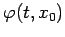
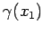
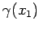

Inhalt Index DeskTop Bronstein

 Dynamische Systeme und Chaos Gewöhnliche Differentialgleichungen und Abbildungen Qualitative Theorie gewöhnlicher Differentialgleichungen Stabilitätstheorie
Dynamische Systeme und Chaos Gewöhnliche Differentialgleichungen und Abbildungen Qualitative Theorie gewöhnlicher Differentialgleichungen Stabilitätstheorie


Sei  eine T-periodische Lösung von (17.1) und ihr Orbit. Das Phasenporträt nahe  wird, unter gewissen Voraussetzungen, durch die Variationsgleichung beschrieben. Da eine T-periodische stetige Matrixfunktion vom Typ (n,n) ist, folgt aus dem Satz von FLOQUET, daß die bei t = 0 normierte Fundamentalmatrix der Variationsgleichung als darstellbar ist, wobei G eine T-periodische reguläre glatte Matrixfunktion mit G(0) = En ist und R eine konstante Matrix vom Typ (n,n) darstellt, die nicht eindeutig festliegt. Die Matrix heißt Monodromie-Matrix des periodischen Orbits
wird, unter gewissen Voraussetzungen, durch die Variationsgleichung beschrieben. Da eine T-periodische stetige Matrixfunktion vom Typ (n,n) ist, folgt aus dem Satz von FLOQUET, daß die bei t = 0 normierte Fundamentalmatrix der Variationsgleichung als darstellbar ist, wobei G eine T-periodische reguläre glatte Matrixfunktion mit G(0) = En ist und R eine konstante Matrix vom Typ (n,n) darstellt, die nicht eindeutig festliegt. Die Matrix heißt Monodromie-Matrix des periodischen Orbits  , die Eigenwerte von eRT sind die Multiplikatoren des periodischen Orbits
, die Eigenwerte von eRT sind die Multiplikatoren des periodischen Orbits  . Wird der Orbit
. Wird der Orbit  durch eine andere Lösung repräsentiert, d.h., ist , so stimmen die Multiplikatoren von
durch eine andere Lösung repräsentiert, d.h., ist , so stimmen die Multiplikatoren von  und  überein. Einer der Multiplikatoren eines periodischen Orbits ist immer gleich Eins (Satz von ANDRONOV-WITT).
und  überein. Einer der Multiplikatoren eines periodischen Orbits ist immer gleich Eins (Satz von ANDRONOV-WITT).
Seien die Multiplikatoren des periodischen Orbits  , und sei
, und sei  die Monodromie-Matrix von
die Monodromie-Matrix von  . Dann gilt
. Dann gilt
| = | |||
| = | (17.17) |
Ist also  , so ist
, so ist  und .
und .
| Beispiel |
|
Sei |